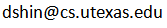

|
My name is Donghyuk Shin. I am a Ph.D student in the Department of Computer Science at the University of Texas at Austin supervised by Prof. Inderjit S. Dhillon. Before coming here, I received my bachelor and master's degree at Sogang University. My research interests primarily focus on the field of data mining and machine learning, particularly in social network analysis, recommender systems and big data analytics. I am also interested in business analytics and management information systems.
|
| Office: | GDC 4.802F |
| Email: |  |